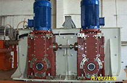

9. Привід елеватору
як правило, застосовується циліндро-конічний редуктор (Bonfiglioli A). Для запобіганню зворотнього ходу елеватору рекомендується встановлювати бекстоп.

10. Привід міксера асфальту
Міксер складається з двох валів з лопатями, які обов’язково мають обертатися синхронно, щоб не допустити зіткнення лопатей. Для забезпечення синхронності проміжні вали редукторів жорстко зчіплюються одне з одним за допомогою з'єднувального валу. Така технічна можливість може бути реалізованою на базі редукторів з конічною ступеню. Класичним є застосування циліндро-конічних редукторів (Bonfiglioli HDO).
Прогресивним з технічної і економічної точки зору є застосування планетарних редукторів з конічною ступеню Bonfiglioli 3 00 R. Окрім вигідної ціни та низької металоємності, застосування пасової передачі захищає механізм від перевищень крутного моменту, що має місце в міксерах та призводить до серйозних ушкоджень обладнання.
6. Привід сушильного барабану
Найчастіше застосовуються циліндричні співвісні або планетарно-циліндричні редуктори (Brevini). Крутний момент від валу редуктора передається на барабан через зубчатий або фрикційний вінець. Така конструкція може створювати значне радіальне навантаження на вихідний вал редуктора, що призводить до виходу з ладу підшипників редуктора. Враховуючи також невисокі оберти редуктора, цікавою пропозицію будуть планетарні редуктори Bonfiglioli 3 00.
5. Привід конвеєра
Найчастіше застосовуються циліндрично-конічні (Bonfiglioli A) або циліндричні мотор-редуктори (Bonfiglioli TA, F). Для запобіганню зворотнього ходу рекомендується встановлювати бекстоп.